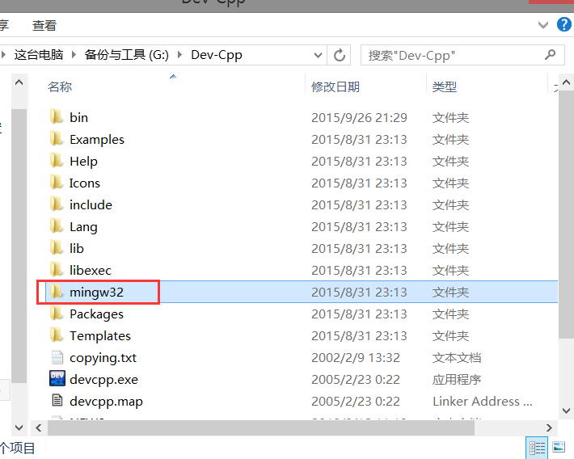

配置Sublime Text 3的姿势(Windows)
本教程适用于新手，若有错误，烦请大神指正
Email address : daddytrapc@gmail.com
为什么用Sublime Text?
其实这段不想看可以直接跳过了
对我个人来说的话，开始使用Sublime的原因大概是
1.文本编辑器方面
作为Notepad++的替代品。
在刚上大学的时候，鄙人用的是Notepad++来编写代码
其实确实是一个很好用的文本编辑器，然而不尽人意的地方就在于——它的主题配色
↑↑↑↑↑↑↑↑这个是Notepad++较为接近默认配置的主题↑↑↑↑↑↑↑↑
其实作为一个可以个性化的文本编辑器(总之不要用Windows的Notepad就好了……)……它确实是可以调主题的
即便如此，效果还是不佳
↑↑↑↑↑↑↑↑这个是Notepad++我自己设置的主题↑↑↑↑↑↑↑↑
可以看出，主题配色变了，然而窗口的边框还是生硬的白色……
或许是鄙人寡闻，不知道有改边框的方法，但是第一次见到sublime就被酷炫的主题色吸引到了(虽说也有人吐槽sublime的原配色难看……)
下面放一下我的sublime大家感受一下吧
2.编译器方面
作为Dev-cpp的替代品。
以前是用Notepad++&nbps;&&nbps;Dev-cpp来编写&编译代码的，然而我的Dev-cpp有很多让我蛋疼的地方……
例如……
- 有时能用有时抽风的Debugger
- 让人捉摸不透的自动缩进
- 不是特别好看的高亮
噢……我想Dev-cpp就不需要截图了……(我已经不太想打开它了……)
舍弃Notepad++的重要原因其实就在于，sublime可以在编辑器里面编译
Ctrl+Shift+B即可编译运行，这可是很方便哦(然而还是有点局限性……)
(对了上面的sort代码是错的)
扯前面这么多纯属安利了……下面就进入正题吧
这里开始吧
1.下载
找到符合自己的系统下载就好了(本文就讲讲Windows)
2.配置编译环境
a.下载编译器
首先你得有编译器——实际上Dev-cpp里面就给你备好了
根据Dev版本不同，它可能会是其他名字
MinGW，里面包含了编译器、调试器、标准库等等。可以看到Dev-cpp里面也是有这个这个工具的
然而我个人还是想脱离Dev-cpp……推荐大伙下载MinGW Installer
不需要的可以跳过
你可以用它来把你的一套MinGW工具装好
这样，把需要的都Mark上(Basic Setup很重要)
然后这样，点左上角的Installation，Apply
然后等待下载
那么找到MinGW的文件夹后就进行下一步吧
b.配置环境变量
以我的文件夹为例，g++ gdb应该是在/MinGW/bin中。所以环境变量就设置在这里了
在Windows系统里，不管在哪个文件夹中运行cmd，都会在环境变量Path的路径中找可执行文件，所以我们要将g++路径添加到Path中
为了美观、便于管理，我们先新建一个环境变量Compilers，再把这个变量添加到Path中
(Windows用%包围表示变量)
测试一下我们是不是真正地设置好了
打开cmd，输入"g++ --version"和"gdb --version"，大概这样的画风，就是成功了
现在我们完成了一半了，下一步是
c.修改sublime的文件
如果你对这里面具体的内容没有兴趣，那么可以点这里直接下载文件替换，然后跳到下一步
找到sublime的文件夹(Sublime Text 3)，打开里面的Packages，可以见到叫做"C++.sublime-package"的文件
如果你有快压的话，可以右键使用快压打开；如果没有……呃，我也不知道有哪个工具也支持(如果你打算安装快压，请谨防2345全家桶)
按下图的步骤打开里面的build文件，这里就是你按下Ctrl+Shift+B时执行的指令了
学习关于Windows的cmd的知识可以帮助你理解这些指令……或许也不需要……在接触如何用Ubuntu编译的时候你就会g++ filename -o outfilename这样的指令了……
而下面出现了奇怪的东西……"MyCallRun"和"MyCallGdb"
这是两个自己写的bat文件，作用在于，让程序运行的结果出现在命令窗口中，而不是出现在sublime的Console中

↑↑↑↑↑↑↑↑Console窗口↑↑↑↑↑↑↑↑
或许你会问，Console中不是挺好看么？然而你不能在其中输入……需要输入测例的程序用这个就会GG
下面来看看bat怎么写吧。当然，我们要让cmd能找到我们的bat，就得放到Path中有的路径中。不妨就放到/MinGW/bin里面吧
接下来新建按照图片中的文件名和内容，建四个文件，后缀名改为bat，放到/MinGW/bin中
这里的指令的意思简要解释一下吧……
%1 表示的第一个参数，看看之前的build文件，里面的第一个参数就是程序名
start用于开一个新的命令窗口来打开另一个bat(这可以让你能够输入测例)
这里的start语法就是
start (bat名) (参数)
另一个bat中，一个是
gdb %1
另一个则是诡异的
%1
自成一行
这时%1所代表的值其实还是文件名，因为它是调用它的bat代入的第一个参数
那么%1自成一行就是直接运行，gdb %1就是用gdb运行它
所以一个实现了直接运行的效果，一个实现了gdb调试运行的效果
d.配置完成
到这里，我们已经配置好了
编写一个cpp文件，保存(必须)，按下Ctrl+Shift+B，你就可以看到最前面说到的这个窗口了
第一项是只编译，第二项是编译运行，第三项是编译并调试
成功了么？成功了的话就恭喜恭喜了！
3.安装插件
正在施工中...